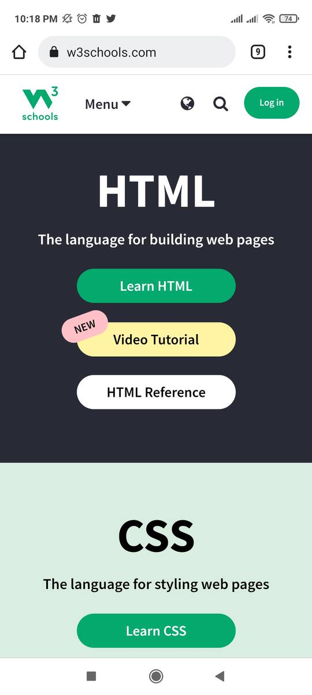
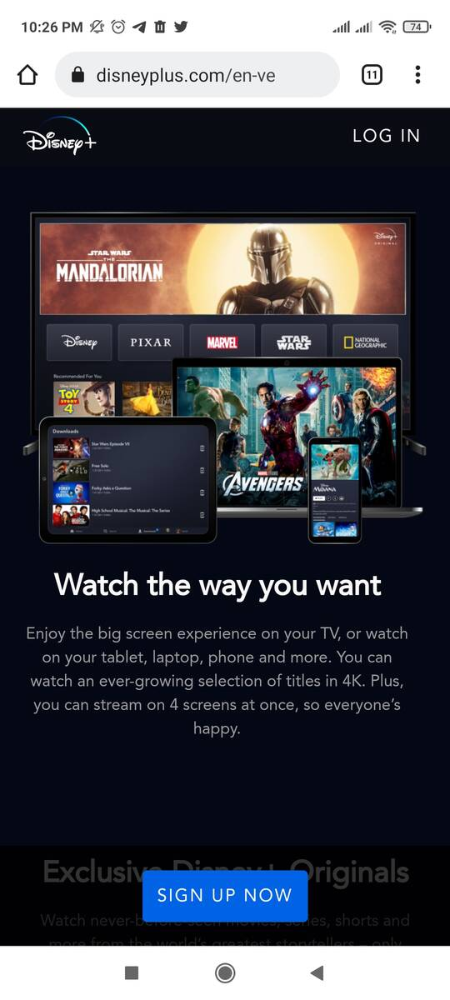
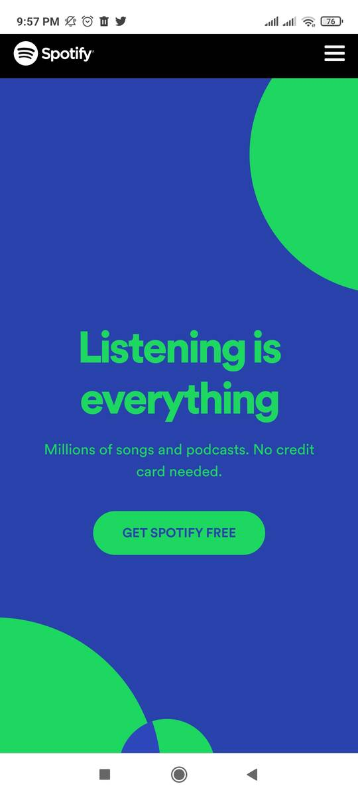

Design Principles Document
Alirio Mieres
PARC: Repetition
W3 Schools
https://www.w3schools.com/
This site provides information on different programming languages, its page complies with the principle of repetition, as it successively shows the languages available to learn in the same order.
Fitt's Law
Disney+
https://www.disneyplus.com/
The home page of this site is very interesting, it has a good design. I think it complies with Fitt's law because it always calls for action with the "sign up now" button, while you continue to see the content of the page the button is always present, this button draws attention due to its color and size.
White Space and Clean Design
Spotify
https://www.spotify.com/is-en/
This page uses white spaces very well, it is easy to read and it looks very interesting, its opening sentence attracts attention, the few elements that it shows make it look striking.